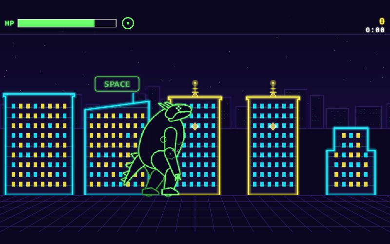

Inputs
- Source run
- 8f2a5b1a-40fc-4d2c-ab2d-dde6daefd9fd
- First feedback
- The monster feels sluggish to move and the stomp lands late. Make it snappier.
Starred outputs
Deliver · gamedir
The final game, index.html at the root, a valid source for a later iterate run
Deliver · reportmd
The source, how to play, every round's changes and the user's words, the keep list, what is left
Neon Kaiju: delivery report
The game
Neon Kaiju is a side-view neon night-city arcade game on a 640×360 canvas. You are a giant monster whose health drains at 4/s. Collapsing buildings and power towers, and killing tanks and helicopters, heal you. The army ramps up until it overwhelms you. Score is 100 per second survived plus destruction points × combo. Plain Canvas 2D, no build step.
Source run: 8f2a5b1a-40fc-4d2c-ab2d-dde6daefd9fd (this run: 505b884e-84be-4d77-9945-105b4a40e93b).
How to play
| Input | Action |
|---|---|
| A / ← , D / → | Walk |
| Space | Stomp (140 px radius, hits buildings and tanks) |
| Left-click | Swipe toward the cursor (hits buildings, tanks, helicopters) |
| Right-click or F | Breath beam toward the cursor (1.8 s cooldown) |
| Esc / P | Pause |
| Click or Space | Start / restart |
| Touch | Left walk pad, STOMP and BEAM buttons, tap to swipe |
Health starts at 80 (max 100). A building heals +10, a power tower +20, a tank or helicopter +8. A building takes 3 hits.
Rounds
Round 1: Stomp impact
- User said: "The monster feels sluggish to move and the stomp lands late. Make it snappier." Then: "The stomps were shaking the screen too much, let's eliminate screen shake and just have the environment react" ("all of the above"). They also said the health-drain tension was too hard for the first level.
- Changed:
stomp.windup0.14 → 0.07 s;monster.speed90 → 135;monster.stride0.5 → 0.34 s;fx.shakeCap20 → 0;beam.rumble2 → 0. Added aquakeblock: nearby buildings sway, antennas rattle and a cyan ground pulse runs out. Files: src/config.js, city.js, monster.js, render.js. - Next the user said: easier early game, dying in the first 40 s, lever = slower damage ramp.
Round 2: Easier first 40 s
- Changed:
army.tank.dmgStart4 → 2;army.tank.dmgRamp75 → 90 s;army.heli.dmgStart1.5 → 0.75;army.heli.dmgRamp75 → 90 s. Only src/config.js. - Next the user said: "Done, the game is right."
Keep list
- Snappier stomp and speed (stomp.windup 0.07 s, monster.speed 135, monster.stride 0.34 s)
- No screen shake (fx.shakeCap 0, beam.rumble 0); city sway and cyan ground pulse stay
- Hit-stop freezes (stomp 60 ms, collapse 80/100 ms, death 120 ms)
- Gentler army ramp (tank dmgStart 2, heli dmgStart 0.75, both dmgRamp 90 s)
Final verify
PASS: 60 fps (worst frame 16.8 ms), keyboard start inside the sandboxed frame, 0 console errors, 0 failed requests. Re-run on the delivered folder: PASS.
What is left
Out-of-scope wishes: none recorded. Notes left for the next round:
- Window-light flicker on impact is not built.
- The death-cause text says "Starved" even when army damage was the real cause.
- No bot harness (play.mjs) exists, so novice survival time is unmeasured.
How to continue
Start this pipeline again with source-run set to 505b884e-84be-4d77-9945-105b4a40e93b.
Deliver · playmd
Line one is the proved link to play the final build
Play Neon Kaiju Be the giant monster that flattens a neon city to stay alive: your health drains and only destruction heals you. A/D or arrows walk, Space stomps, left-click swipes, right-click or F breathes a beam, Esc pauses. 2 rounds played.
Questions and answers
-
First ask asked · answered ·
You said: "The monster feels sluggish to move and the stomp lands late. Make it snappier." Shall we start there? Play understand.game first (click inside the frame so keys reach the game): http://localhost:4810/api/runs/505b884e-84be-4d77-9945-105b4a40e93b/stages/understand/outputs/game/index.html. Or pick another focus from the next-iteration list.
Start with snappier monster
-
First ask asked · answered ·
Which moment felt worst? What were you trying to do when the monster felt sluggish or the stomp landed late?
The stomps were shaking the screen too much, let's eliminate screen shake and just have the environment react
-
First ask asked · answered ·
Understood: no screen shake at all (stomp, collapse, death), and the world reacts instead. What should the environment do on a stomp?
all of the above
-
First ask asked · error ·
What do you like about the game right now that this round must not break?
(error)
-
First ask asked · answered ·
What do you like about the game right now that this round must not break?
the first three, the health-drain tension I think is currently too hard for the first level
-
Ask asked · error ·
Round 1 build is ready: merge.game http://localhost:4810/api/runs/505b884e-84be-4d77-9945-105b4a40e93b/files/stages/merge/outputs/game/index.html Changed: stomp windup 0.14 s → 0.07 s, monster.speed 90 → 135, stride 0.5 s → 0.34 s. Screen shake is off (shakeCap 20 → 0); nearby buildings sway and a cyan ground pulse runs out instead. Verification: PASS. Test first: click inside the frame so keys reach the game, then tap Space beside a building. Does the stomp land at once, and does the city reaction feel right? What should change next?
(error)
-
Ask asked · answered ·
Round 1 build is ready: merge.game http://localhost:4810/api/runs/505b884e-84be-4d77-9945-105b4a40e93b/files/stages/merge/outputs/game/index.html Changed: stomp windup 0.14 s → 0.07 s, monster.speed 90 → 135, stride 0.5 s → 0.34 s. Screen shake is off (shakeCap 20 → 0); nearby buildings sway and a cyan ground pulse runs out instead. Verification: PASS. Test first: click inside the frame so keys reach the game, then tap Space beside a building. Does the stomp land at once, and does the city reaction feel right? What should change next?
Easier early game
-
Ask asked · answered ·
Easier early game: in which moment does it feel too hard?
Dying in the first 40 s
-
Ask asked · answered ·
Which lever should round 2 turn to ease the first 40 s?
Slower damage ramp
-
Ask asked · error ·
What must the next round not break?
(error)
-
Ask asked · answered ·
What must the next round not break?
Snappier stomp and speed, No screen shake, Hit-stop freeze
-
Ask asked · answered ·
Round 2 build is ready: merge.game http://localhost:4810/api/runs/505b884e-84be-4d77-9945-105b4a40e93b/files/stages/merge/outputs/game/index.html Changed: army damage ramps in more gently. army.tank.dmgStart 4 → 2, army.heli.dmgStart 1.5 → 0.75, and both dmgRamp 75 s → 90 s. A tank shell at 20 s costs 2.9 (was 4.5) and a helicopter burst 3.1 (was 4.9). Full damage arrives at 90 s. Verification: PASS. The snappy stomp and still screen from round 1 are intact. Test first: click inside the frame so keys reach the game, then play loosely for 40 s. Are you still alive? What should change next?
Done, the game is right
Other outputs
- Check source · source.json 180B
- Toolkit · toolkit.dir 4.1KB
- Understand · game.dir 4.1KB
- Understand · harness.dir 4.1KB
- Understand · digest.md 17KB
- First ask · feedback.md 2.8KB
- Research · change-plan.md 5.3KB
- Research · plan.json 113B
- Code · game.dir 4.1KB
- Code · harness.dir 4.1KB
- Code · code-report.md 1.4KB
- Art · assets.dir (absent)
- Art · art-report.md (absent)
- Merge · game.dir 4.1KB
- Merge · harness.dir 4.1KB
- Merge · screenshots.dir 4.1KB
- Merge · changelog.md 5.7KB
- Verify · verdict.md 167B
- Ask · feedback.md 492B
- Ask · done.md 25B
- Deliver · screenshots.dir 4.1KB
| Stage | Group | Status | Model | Duration | Tokens |
|---|---|---|---|---|---|
| Check source | check | done | script | 0 s | 0 |
| Toolkit | check | done | script | 1 s | 0 |
| Understand | understand | done | sonnet | 1 min 25 s | 551K |
| First ask | first | done | sonnet | 4 min 37 s | 278K |
| Research | plan | done | opus | 1 min 09 s | 1.2M |
| Code | build | done | opus | 36 s | 851K |
| Art | build | skipped | opus | 0 s | 0 |
| Merge | merge-test | done | opus | 35 s | 375K |
| Verify | check-build | done | script | 8 s | 0 |
| Ask | talk | done | sonnet | 37 s | 446K |
| Deliver | ship | done | sonnet | 32 s | 192K |